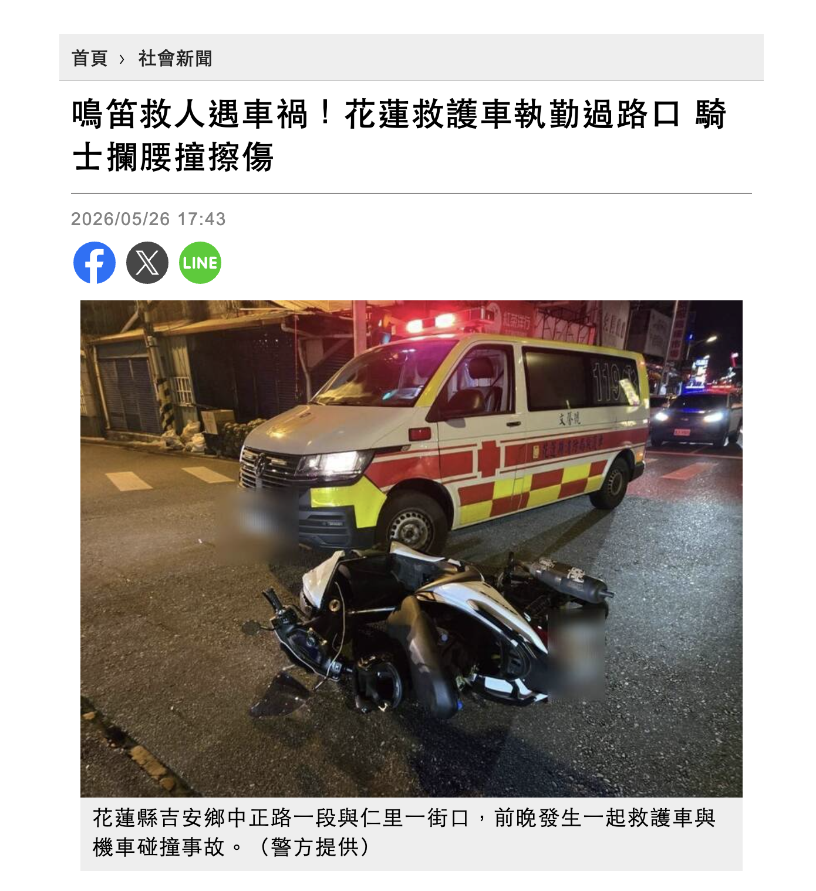
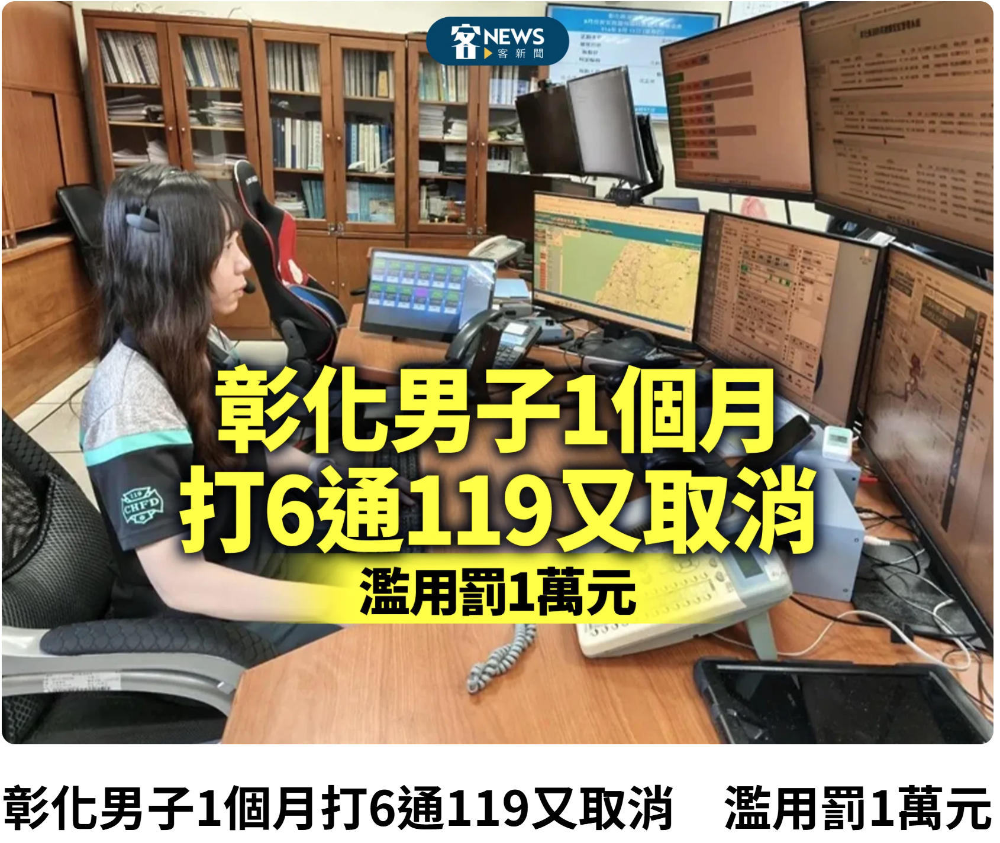
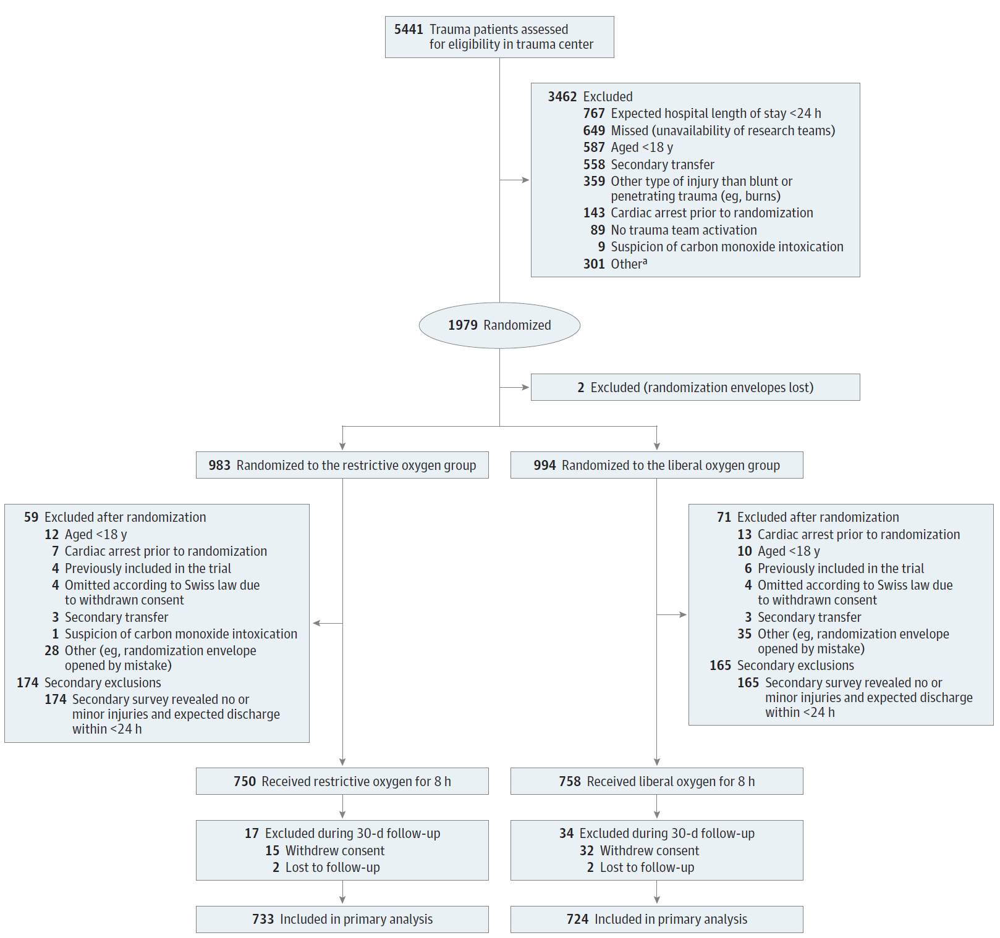
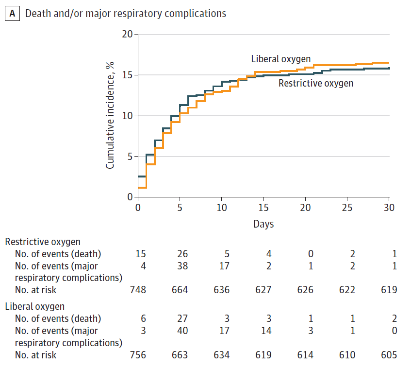
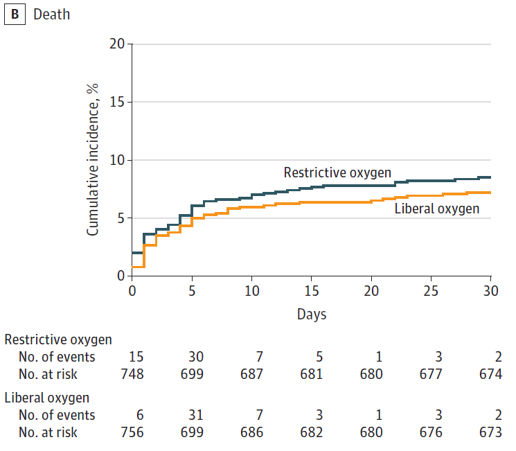
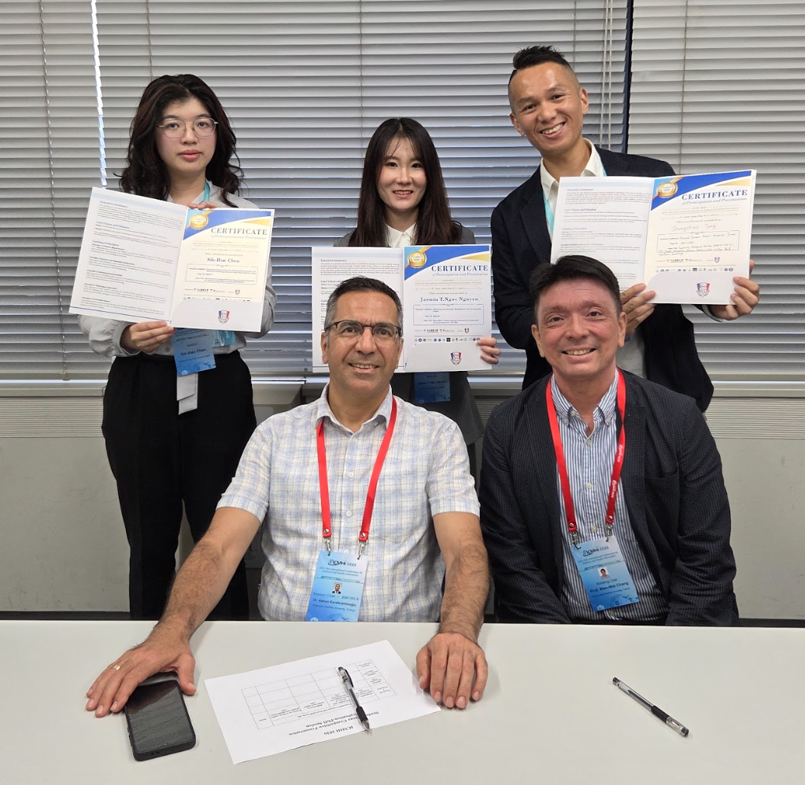
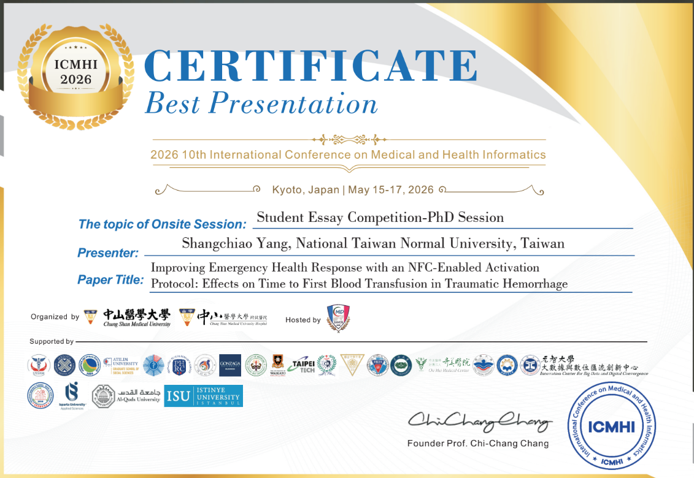
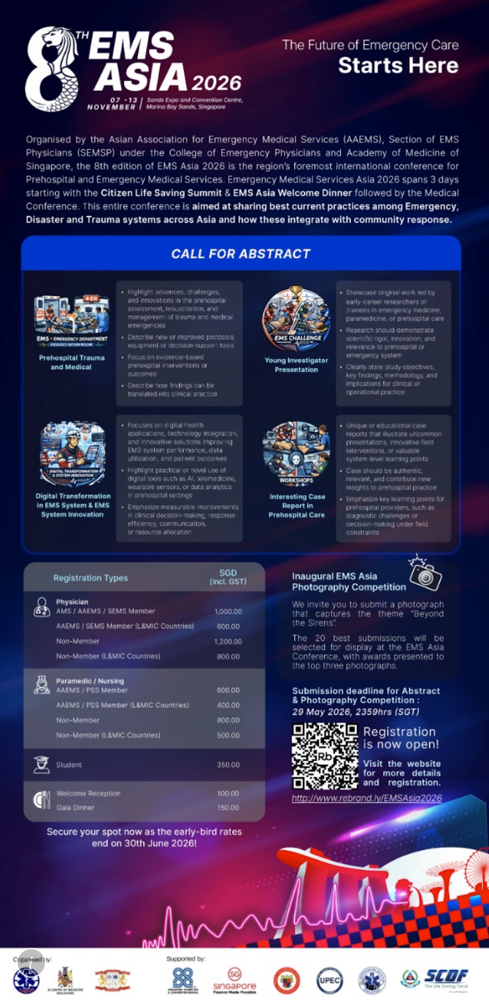

2026 年 6 月刊
台灣緊急醫療救護通訊
立場聲明｜落實四大安全支柱，全面提升救護行車安全

針對近期曾發生救護車值勤途中車禍，導致行車雙方與救護車上送醫病人受傷之憾事，本學會深表遺憾。對於 EMS 行車安全本學會特此表達立場，唯有救護技術員（EMT）、其他用路人、政策面（軟體）與道路及車輛設計（硬體）共同努力，方能全面提升我國救護行車安全。
主要立場：四大安全支柱
一、EMT 應接受勤務安全專業訓練並落實「防禦性駕駛」：《各級消防機關救護勤務安全指導原則》（內政部消防署，2023 年版）即強調「行經十字路口時，應注意擁有路權車輛之動向、速度，放慢行車速度，並逐線確認雙側車道淨空或來車有否減速煞停，視需要調整警鳴器頻率及輕按喇叭提示」。部分縣市已開始進行緊急車輛安全駕駛訓練課程，如雲林縣消防局新進人員訓練計畫亦涵蓋急停訓練與轉彎控制。政策與制度上應避免救護車駕駛分心，例如無線電由副駕駛操作或免持、發車前回報，由副駕駛或導航機協助導航，以及避免與任務無關之交談（靜默駕艙原則）。
二、推廣用路人禮讓救護車觀念：鑑於多數交通事故所致之傷亡具有可預防性，防禦駕駛觀念應視為全體用路人必備之基本交通素養。消防署與各地消防局長期透過官網與社群推廣如何避讓救護車之宣導文件與影片，尤其接近路口時聽聞警鳴器聲響，即使擁有路權也應減速，更不得搶快進入路口。本會建議將此類教材納入駕訓班必修課程，並持續利用大眾媒體宣導，以提高民眾的道安、車安意識與對救護車優先權的認知。
三、制定政策與建立事件通報機制（軟體面）：高雄市率先制定《緊急任務車輛防制交通事故自治條例》，要求過紅燈時車速需慢至「隨時可停」之速度並建立駕駛抽查機制；內政部消防署推動的指導原則，呼籲各級消防機關定期檢視事故案例，例如「幾近錯誤事件」也應由分隊長或中隊長主持調查會議，並建立「安全文化」，強調事後檢討與教育回饋。桃園市消防局於民國 115 年 2 月 25 日起提供幾近錯誤事件通報獎勵 300 元禮券，是落實此項概念的典範。
四、建立道路與車輛設計標準（硬體面）：美國 NFPA 1917 標準規範救護車須符合 FMVSS 碰撞測試、乘客艙固定及兒童固定套件等安全條件；臺灣雖然目前沒有車體設計的國家標準，但建議與所有關係人尋求共識，對於已經普及於一般客車的主被動安全系統，逐步落實於救護車捐贈作業的最低要求中。
文獻依據：減少不必要的警示燈與警鳴器
目前已有許多文獻支持藉由導入病情評估與派遣端的案件分級，以減少不必要地使用警示燈與警鳴器（lights and siren, L&S）：
美國全國性分析：利用 NEMSIS 2019 年資料之研究顯示，使用 L&S 的運送階段，救護車碰撞風險顯著增加（勝算比 1.7，p < 0.01）。
系統綜述：StatPearls 統合 25 年研究，指出 L&S 僅縮短平均運送時間 0.7–3.8 分鐘，真正影響病人預後者不足 5%。
病人需求導向研究：歐洲研究顯示，非創傷事件中僅 8.5% 達到 15 分鐘內「院內急救介入」（TCHI）門檻，過度動用 L&S 造成 40% 以上「過度分級」。
美國聯邦調查：NHTSA 針對 2012–2018 年 1600 起地面救護車事故分析，同樣確認 L&S 使用與傷亡風險相關。
最新趨勢：美國 NEMSIS 2023 救護資料年報中，已有八州透過結構化的派遣中心流程，大幅減少非危急 L&S 派遣。
現行法規
《緊急醫療救護法》第 17 條：「救護車應裝設警鳴器……紅色閃光燈，車身為白色……非因情況緊急，不得使用警鳴器與紅色閃光燈」，同法第 46 條規定違法可處 5000–25000 元罰鍰。道路交通管理處罰條例第 45、46 條：用路人遇緊急車輛未依規避讓，可處 1800–3600 元罰鍰。內政部消防署指導原則明確要求「非危急案件應依醫師指令與病情判斷決定燈鳴啟用」，並鼓勵「事前路線規劃及協調警政單位」以降低行車風險。
現況與縣市經驗
事故態樣：內政部消防署統計，近十年救護出勤年均逾 110 萬次，其中因交通事故啟動者約 29%；地方新聞仍頻傳救護車翻覆或闖紅燈碰撞等事故（如 2024 年台東市民間救護車翻覆造成 3 人傷；2025 年新北市無照駕駛民間救護車撞死機車騎士事件），但專屬救護車事故並未單獨統計。
地方消防局 SOP 與創新作為：台北市發布「禮讓救災救護車輛須知」與示範影片；新北市於輔仁大學醫院周邊設置「救命便道」，施劃紅線並設救護專用告示；雲林縣每年定期辦理救護車安全駕駛與急停演練；桃園市消防局提供幾近錯誤事件通報獎勵。車輛升級：各直轄市陸續引進符合 NFPA 1917 的新式救護車，包含三點式安全帶、抗翻覆結構與外部高對比標示。
結論與呼籲
本會呼籲縣市消防機關：落實勤務分級，非危急運送不啟用警示燈警鳴器，並持續防禦駕駛訓練與例行檢核，建立救護車（幾近）事故的登錄機制。呼籲用路人：聞警笛即靠邊減速，互助才能共保生命。呼籲主管機關：將《各級消防機關救護勤務安全指導原則》法制化並加速制定全國一致之救護車安全指引，建立事故登錄與分析機制，定期公布縣市年報並舉辦研討會做標竿學習。呼籲車輛廠商與設置機構：採用符合國際標準之車體與主被動安全裝置，並導入車隊監控與 AI 預警系統。
參考文獻
- Watanabe BL, et al. Ann Emerg Med. 2019;74:101-109.
- StatPearls. "EMS Lights and Sirens." NCBI Bookshelf, 2024.
- Caputo L, et al. Scand J Trauma Resusc Emerg Med. 2023;31:45.
- NHTSA. Analysis of Ground Ambulance Crash Data 2012-2018. 2020.
- NEMSIS TAC. Annual Public Data Report 2023. 2025.
- 內政部消防署《緊急救護服務統計（101–110 年）》。
- 內政部消防署《各級消防機關救護勤務安全指導原則》2023 版。
- 高雄市《緊急任務車輛防制交通事故自治條例》。
- 內政部消防署《禮讓救護車》。
- 雲林縣消防局《安全駕駛教育訓練計畫》。
- 《緊急醫療救護法》§17、§46。
- NFPA 1917《Standard for Automotive Ambulances》2019 版。
- 新北市政府「緊急救護便道」新聞稿，2022-10-26。
- ARTC 汽車、機車防禦駕駛手冊。

立場聲明｜珍惜緊急救護資源，保障危急病人求助權益

主要立場
近期媒體報導多起救護資源使用爭議事件，引發社會對於緊急救護資源合理使用之討論。如何在維護有限救護量能與保障民眾求助權益之間取得平衡，已成為當前緊急醫療救護體系的重要課題。基於此議題，本會提出以下立場：
一、緊急救護資源屬於公共安全與醫療體系的重要資產，應優先提供給急重症及具潛在生命危險之病人。
二、本會反對任何明顯、重複或惡意濫用救護資源之行為。
三、對於高頻率使用救護系統者，應建立跨消防、醫療及社政之整合管理機制，並透過民眾教育、分流與替代服務提升資源使用效率。
文獻依據
緊急救護系統（Emergency Medical Services, EMS）係以有限的人力、車輛及醫療資源，提供急重症病人即時到院前照護與後送服務。當救護資源遭不當使用或大量低急迫性案件占用時，可能降低系統可用性（availability），進而影響急重症病人獲得及時救援之機會。
Harring 等人於 2025 年發表之範圍性回顧（scoping review）指出，高頻 EMS 使用者常伴隨高齡、慢性疾病、精神健康問題及社會支持不足等因素，雖僅占整體使用人口之少數，卻可能反覆啟動救護系統，持續占用 EMS 資源[1]。Booker 等人的系統性回顧探討了病患因「基層醫療可處理問題（primary care sensitive conditions）」而使用救護車的現象，指出這類低急迫性案件常伴隨高齡、交通困難、社會支持不足，或病患主觀對病情的急迫性感受[2]。因此，近年 EMS 政策發展趨勢已逐漸轉向透過個案管理（Case Management）、社區救護（Community Paramedicine）及跨部門合作模式，以提升救護資源使用效率，同時保障危急病人之求助權益[3]。
現行法規
我國緊急醫療救護制度係依據《緊急醫療救護法》建構，其立法精神在於確保傷病患獲得適當醫療處置與保障人民生命及健康。第 29 條明定，救護技術員執行緊急救護時，應依病人病情、傷勢及醫療需求，將緊急傷病患送達就近適當之醫療機構。此外，《消防法》第 36 條亦規定，無故撥打報案電話或謊報火警、災害、緊急救護者，處新台幣 1 萬元以上、5 萬元以下罰鍰，顯示我國法制已將維護緊急救護資源正常運作列為重要公共利益。
現況與縣市經驗
近年隨著救護案件持續增加，部分地方政府亦開始建立相關管理制度。例如高雄市訂有《高雄市消防救護車收費辦法》，針對明顯非屬緊急救護目的之案件收取服務費；彰化縣則曾針對短期間內重複報案後取消救護需求之案件依法裁罰。此外，桃園市針對明顯輕症（檢傷第四、五級）或送醫後未至急診就醫等案件，由救護人員紀錄並開立收費告知單，再透過後續審查會議評估是否符合收費條件；台北市則針對未送往轄內急救責任醫院或送醫後未完成急診就醫之案件開立收費告知單，每月由救護車收費審議小組（委員由消防局、衛生局、社會局及精神醫療等專家組成）審查，並定期監測高頻使用民眾，授權分隊同仁與鄰里長進行關懷與訪談，透過柔性勸說了解其需求，以兼顧資源管理與民眾實際需求。上述措施顯示各縣市已逐漸由單純限制使用，轉向透過制度化審查及跨領域合作模式，辨識不當使用與真正需要協助之個案。
結論
緊急救護資源是維繫全民生命安全的重要公共資產，其設立目的在於有限時間內提供急重症病人即時且適切之醫療協助。本會認為，珍惜緊急救護資源應透過民眾教育、合理分流及高頻使用者管理機制等多元策略，共同提升救護資源使用效率。同時，任何制度設計均應以保障民眾生命安全為最高原則，避免因過度限制而影響危急病人的求助意願與就醫權益。
救護車不是一般交通工具，而是守護生命的重要醫療資源。珍惜緊急救護資源的目的，不是限制民眾求助，而是確保每一位真正需要幫助的人，都能在最短時間內獲得即時救援。
參考文獻
- Harring AKV, Kjaergaard M, Gehrt TB. Frequent callers vs. frequent users – a scoping review of frequent contacts to the emergency medical services. Int J Emerg Med. 2025;18:108.
- Booker MJ, Shaw ARG, Purdy S. Why do patients with 'primary care sensitive' problems access ambulance services? BMJ Open. 2015;5:e007726.
- Agarwal G, et al. Effectiveness of the community paramedicine at home (CP@home) program... BMC Health Serv Res. 2024;24(1):1444.
- 全國法規資料庫《緊急醫療救護法》第 29 條。
- 全國法規資料庫《消防法》第 36 條。
新知分享｜不是猛開氧氣就好！一分鐘看懂創傷給氧新觀念
研究背景與核心問題
傳統指引的潛在盲點：現行的高階外傷救命術（ATLS）指引建議，所有嚴重受傷的創傷病患在初期都必須接受氧氣補充，但支持這項建議的科學證據其實極為薄弱。「給太多氧氣」的潛在危害：過去的觀察性研究與系統性回顧發現，在創傷及重症病患身上，給予過多氧氣導致的「高血氧（Hyperoxemia）」，反而與死亡率增加及重大呼吸道併發症風險上升有關。核心疑問：如果在創傷發生後的早期（前 8 小時），將給氧策略改為「限制型（僅維持基本血氧）」，是否能比傳統的「開放型（給予高濃度氧氣）」更能降低死亡率與呼吸道併發症？

研究設計與處置
試驗設計：這是一項跨國（丹麥、荷蘭、瑞士）、多中心的隨機對照試驗，最終分析了 1508 位因嚴重創傷啟動創傷小組的成人病患。病患在「到院前救護階段」或「抵達急診室時」即被隨機分組。限制型給氧組：目標是將血氧飽和度（SpO₂）維持在 94%，給予能維持 SpO₂ 達 94% 的「最低氧氣量」；若病患在不給氧的情況下 SpO₂ 就 ≥ 94%，則不額外給氧。開放型／寬鬆型給氧組：依循傳統常規給予高濃度氧氣，非插管患者給予非再呼吸型面罩 15 L/min，插管患者則給予 100% 氧氣（FiO₂ 1.0）。介入時間：從創傷發生後儘早開始，持續 8 小時。
研究結果：打破「有氧治百病」的迷思


死亡與重大呼吸道併發症（無顯著差異）：在主要預後（30 天內死亡或發生重大呼吸道併發症）上，限制型給氧組發生率為 16.1%，開放型組為 16.7%（OR 1.01），兩者在統計學上沒有顯著差異。若單獨看 30 天內死亡率（8.6% vs. 7.3%）或單獨看重大呼吸道併發症（8.9% vs. 10.8%），兩組間也都沒有統計上的顯著差異。安全性與併發症（限制型給氧可減少肺塌陷）：雖然主要預後無差異，但限制型給氧組發生「肺塌陷」的比例顯著低於傳統開放型給氧組（27.6% vs. 34.7%）。整體結論：對於成人創傷病患，在院前或急診初期實施 8 小時的「限制型給氧策略」，與傳統「無論如何都給大氧氣」的策略相比，雖然沒有顯著降低整體死亡或重大呼吸併發症的比率，但表現相當，且能減少肺部塌陷的風險。
給三大族群的一句話
消防救護人員：嚴重創傷病患不一定都要立刻給予非再呼吸型面罩 15 L 氧氣。若現場測得血氧（SpO₂）已達 94% 以上，不需盲目給予高濃度氧氣。密切監測並維持血氧在 94% 是安全的，不僅不會影響病患存活率，還能節省救護車上的氧氣資源。
醫療指導醫師：傳統創傷指引多建議無差別給予高濃度氧氣。但研究證實，從院前到急診初期實施「血氧目標 94%」的限制型給氧策略，與傳統給氧相比，存活率與重大併發症皆無顯著差異。建議未來可將 EMS 協定更新為更精準的滴定式給氧。
急診醫師：創傷復甦前 8 小時，將給氧目標下修並維持在 SpO₂ 94% 即可。盲目給予滿載氧氣並不會改善死亡率，反而會顯著增加病患發生「肺塌陷」的機率（傳統給氧組 34.7%，限制型組 27.6%）。
人物訪談｜從街道醫學到國際舞台：桃園市消防局桃園分隊小隊長楊尚樵
從我們常在新聞中看到救護人員穿梭在街頭的英姿，但你可能不知道，為了替病患爭取多一秒的搶救時間，他們在背後付出了多少努力。甫獲國際論文大獎肯定的救護員楊尚樵，正是將「臨床實務」與「學術研究」完美結合的典範。身為第一線緊急救護人員，他沒有對流程中的「微小延遲」妥協，反而選擇攻讀博士，並帶領桃園團隊運用低成本的 NFC 技術，大幅縮短了急重症病患的輸血時間，讓國際評審大為驚豔。以下是尚樵與我們分享的得獎心得。


一、為什麼參賽？將臨床差距與學術對接
身為第一線到院前緊急救護人員，在搶救 OHCA 與重症的實務中，常發現許多流程上的「微小延遲」。正是這些現場觀察到的街道醫學與學術差距，驅使我攻讀博士。我想驗證在臨床第一線發展出的救護思維，在實證醫學上是否行得通，並探討如何利用數位科技來解決這些真實世界中的實務困境。
二、現場感觸：救護思維更要 AI 化以減少認知負荷
在國際研討會上，全球專家都在思考如何將大數據與 AI 無縫導入醫療。當評審與學者對桃園利用 NFC 這種簡便、低成本且高效率的技術，來顯著縮短到院後輸血處置時間感到驚艷時，我深切意識到：最好的救護研究不是追求昂貴設備，而是用聰明的科技解決執行人員的問題，未來救護思維更需 AI 化以減少第一線的認知負荷。
三、未來研究與台灣展望：運用科技串聯台灣 EMS 系統
榮獲博士生組論文大獎是肯定也是責任。我將更專注於 Translational Medicine「轉譯醫學」，讓醫療科學真正落地到緊急救護現場與急診室。台灣有強大的科技業與救護實務，未來應更大膽導入跨學科合作。期待全國 EMS 同好串聯創新火花，用科學簡便的方式為第一線賦能，讓台灣的救護研究持續在國際發光！在此也要感謝團隊明逹、松信、邦定、忻慈、晏博及桃園一大品管小組成員，謝謝你們才能將此系統發揮最大效益。
近期活動

2026 第 11 屆 Pan-Asian Trauma Outcomes Study (PATOS) Research Workshop
活動時間：115 年 8 月 24 日～ 8 月 25 日｜活動地點：首爾國立大學醫院。
PATOS（泛亞洲創傷結果研究）是在 2013 年發起的跨國創傷登錄計畫。過去各國的創傷與救護數據非常破碎，PATOS 透過建立標準化的指標與定義，將亞洲各國（包含台灣、日韓、星馬等 10 國）的到院前救護與急診創傷數據串聯、整合。目前已累積超過 28 萬筆資料，旨在透過大數據研究，找出能真正提升外傷病人存活率的救護與醫療策略。
2026 8th EMS ASIA
活動時間：115 年 11 月 7 日（六）～ 11 月 13 日（五）｜活動地點：新加坡濱海灣金沙會議展覽中心。
主辦單位：亞洲緊急醫療服務協會（AAEMS）、急救醫療醫生分會（SEMSP）。
相關連結 →